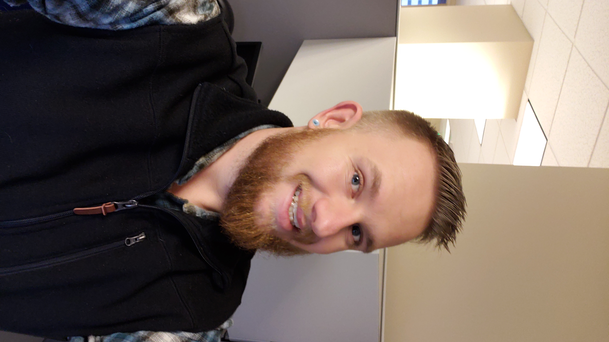

 I currently work with the Division of Vocational Rehabilitation. My current duties are assisting our blind and low vision users with software and hardware recommendations, this is to ensure that they can complete their job effectively. I install and help with the initial setup of JAWS, Zoomtext, Dragon, Duxbury, Kurzweil, and NVDA. I have helped update and maintain the Division’s Intranet page and have also ensured that it is accessible to screen readers. I ensure that all HR documents to include but not limited to; policies, procedures and desk aids, are accessible to all of our staff. I am the purchasing agent for my team and work within a procurement application(CORE)to ensure that all of our software licensing is up to date and that all end of life equipment is replaced. I have also been in charge of helping migrate off of end of life servers (Windows Server 2008 r2) to our “cloud” solution. During this transition we are getting AD updated to have all user drive mappings ran with group policy instead of having scripts run at login.
Before I worked with DVR I worked for the Governors Office of Information and Technology for 6 years. My duties were to assist users with daily break fixes on Windows 7 enterprise, Windows 8 and Windows 8.1. I also assisted the Rural consortium with new computer replacement and daily break fixes. I ensure that all computers that I deploy have been imaged correctly and are secure to put onto the network. I helped transition the Division of Vocational Rehabilitation from CDHS to CDLE. I trained Robin Cline into his current position at 251 East 12th Avenue with the Department of Labor and Employment. I also work tickets from are CA service desk ticketing system. I am proficient in Office 2010, Office 2013, and Office 2016 on the Windows 7 operating system. I am knowledgeable on all of the computer operations, functions, and related peripherals. This includes JAWS, ZoomText, Dragon Naturally Speaking and apple Assistive Technology(on mobile devices). I also help create documentation for our technicians and users on how to properly install and use software. I am able read and interpret technical manuals, equipment diagrams, and specifications. I work collaboratively with a team of 7 individuals while demonstrating independent decision making.